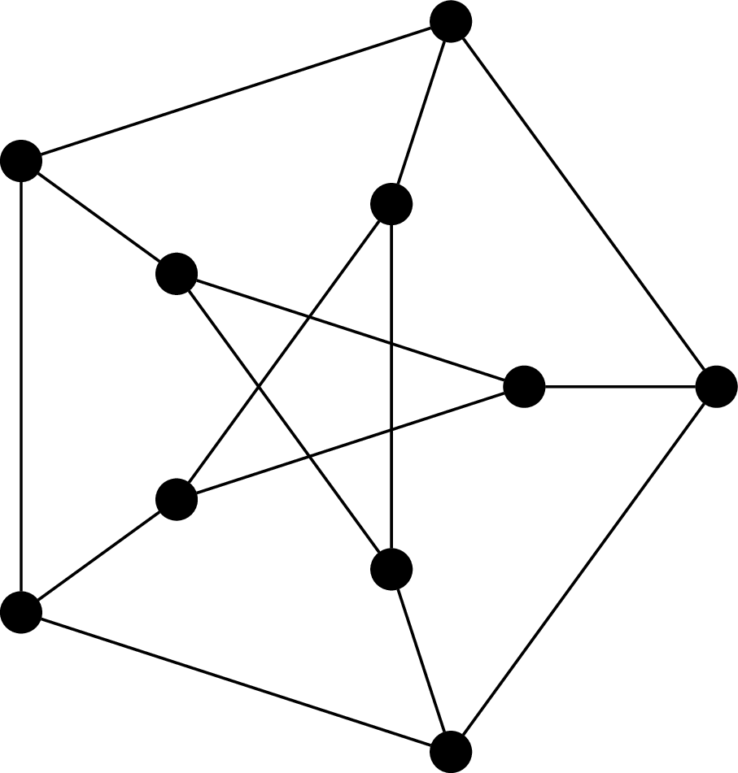
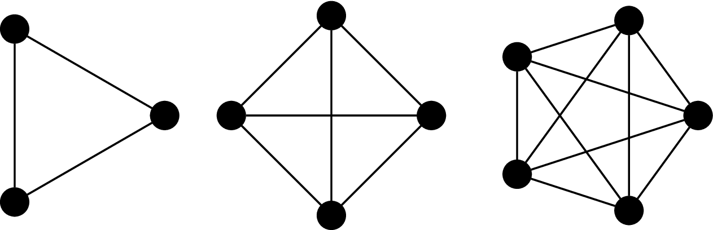
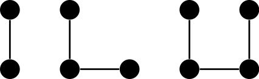
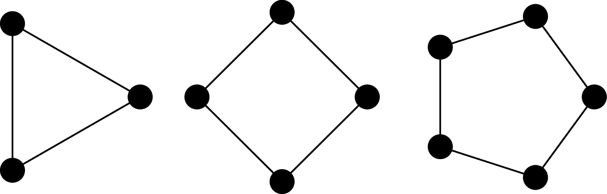

Our last major topic in CMSC 27100 is graph theory. By graphs, we mean mathematical objects that consist of nodes connected by edges. We'll see that graphs are a helpful conceptual model for representing connections or relationships between locations, people, and more. You can scroll down to see some visualizations of graphs. Note that these graphs have nothing to do with the graphs you saw in calculus: it is a just a collision of names.
Computer science uses graphs to model all sorts of abstract relationships in data structures. In order to give some examples, let's fix the definition of a graph.
A graph $G = (V,E)$ is a pair of sets where $V$ is finite and every element of $E$ is a subset of $V$ of size $2$. We call the elements of $V$ the vertices of $G$ and the elements of $E$ the edges of $G$. When $e=\{u,v\}$ is an edge, we will usually write $e=uv$ instead of $\{u,v\}$. We define the empty graph to be $G= (\emptyset,\emptyset)$.
This definition is presented for technical precision. In practice, graphs and statements about them are quite intuitive, and we won't appeal to the precise definition that often. Here is a visualization of a graph:

Graphs can represent various relationships, like friendships in social networks, how computers are connected, and how locations are connected by roads or paths.
A few comments about Definition 10.1 are in order. The objects defined here are called finite simple undirected graphs in other contexts.
All graphs in this class will obey our definition.
Graph theory has a lot of definitions and terminology, but it is mostly intuitive, easy to remember, and even charming.
Two vertices $u$ and $v$ of a graph $G$ are adjacent or are neighbors if $uv\in E$. We say the edge $e$ is incident to $u$ if $u\in e$. If $e=uv$ is an edge, we refer to $u$ and $v$ as the endpoints of $e$.
The neighbourhood of a vertex $v$, denoted $N(v)$, is the set of neighbors of $v$. In mathematical notation, this is \[ N(v) = \{u \in V \mid uv \in E\}. \] The neighborhood of a set of vertices $A \subseteq V$ is defined to be \[ N(A) = \bigcup_{v \in A} N(v)\setminus A. \] That is, $N(A)$ consists of all vertices that are adjacent to some vertex in $A$, but not in $A$ themselves.
The degree of a vertex $v$ in $G$, denoted $\deg(v)$, is the number of its neighbors. A graph $G$ is $k$-regular if every vertex in $G$ has degree $k$.
Observe that every vertex in the Petersen graph has degree 3, so the Petersen graph is 3-regular, or cubic.
The following results are some of the first graph theory results, proved by Leonhard Euler in 1736.
Let $G = (V,E)$ be an graph. Then $$\sum_{v \in V} \deg(v) = 2 \cdot |E|.$$
This proof is usually presented very quickly, and indeed it is true for a simple reason: Every edge $uv$ is incident to exactly two vertices: $u$ and $v$. Therefore, each edge contributes 2 to the sum of the degrees of the vertices in the graph.
In case that is too fast, here is a more detailed proof.
Define a function $f: V \times E \to \{0,1\}$ by $$ f(v,e) = \begin{cases} 1 & \text{if $v$ is incident with $e$} \\ 0 & \text{otherwise} \end{cases}. $$ Now consider the sum $$ D = \sum_{v\in V}\sum_{e\in E} f(v,e). $$ On the one hand, we have $$ D = \sum_{v\in V}\deg(v) $$ since the inner sum counts the edges incident at $v$, which is the same as the degree of $v$. On the other hand, we can reverse order of the sums to get $$ D = \sum_{e\in E}\sum_{v\in V} f(v,e). $$ The inner sum is always equal to $2$, since every edge is incident at exactly two vertices. Therefore $$ D = \sum_{e\in E} 2 = 2|E|, $$ proving the theorem.
Let $G$ be a graph. Then the number of vertices of odd degree in $G$ is even.
Let $V_1, V_2 \subseteq V$ be the sets of vertices of $G$ with odd and even degree, respectively. Note that $V_1 \cup V_2 = V$, and $|V_1| + |V_2| = |V|$. Then $$\sum_{v \in V} \deg(v) = 2|E| = \sum_{v \in V_1} \deg(v) + \sum_{v \in V_2} \deg(v).$$ We observe that since $\deg(v)$ for $v \in V_2$ is even, then the sum $\sum_{v \in V_2} \deg(v)$ is even. Then since $2|E|$ is even, this must mean that the sum $\sum_{v \in V_1} \deg(v)$ is even. But since $\deg(v)$ is odd for $v \in V_1$, this implies that $|V_1|$ must be even.
When rephrased as a bunch of people shaking hands, the lemma says that there must be an even number of people who have shaken an odd number of hands.
We now define some notation for certain graphs that arise frequently.
A complete graph on $n$ vertices is a graph $K_n = (V,E)$, where $|V|=n$ and $$E = \{uv \mid u,v \in V\}.$$ That is, all vertices are neighbours with each other.
Here are some complete graphs:

A path on $n$ vertices is a graph $P_n = (V,E)$ with $n\geq 1$ distinct vertices $V = \{v_1,v_2,\ldots,v_n\}$ and \[ E = \{v_1v_2,\ v_2v_3,\ \ldots,\ v_{n-1}v_n\}. \]
Under this definition, we allow a graph consisting of a lone vertex with no edges to be a path. Here are some other graphs that are paths:

A cycle on $n$ vertices is a graph $C_n = (V,E)$ with $n\geq 3$ distinct vertices $V = \{v_1,v_2,\ldots,v_n\}$ and \[ E = \{v_1v_2,\ v_2v_3,\ \ldots,\ v_{n-1}v_n,\ v_nv_1\}. \]
And here are some graphs that are cycles:

It will frequently be useful to speak of one graph "containing" another graph. For instance, we could describe a graph with a triangle as "containing a $K_3$". The notion of a subgraph makes this precise.
A graph $G' = (V',E')$ is a subgraph of a graph $G = (V,E)$ if $V' \subseteq V$ and $E' \subseteq E$. A subgraph $G'$ is spanning if $V'=V$.
Note that because we require that $G'$ itself be a graph, $E'$ must consist of edges with both ends in $V'$.
We will also use the concept of an induced subgraph.
The subgraph induced by a subset $V' \subseteq V$ is the graph $G'=(V',E')$, where $E' \subseteq E$ consists of every edge with both ends in $V'$. We say a subgraph $G'$ is an induced subgraph of $G$ if it is induced by some subset of $V$.
A subgraph being induced by $V'$ means that it takes all of the edges from $G$ that go between its vertices. For example, the graph induced by $V'=V$ is always the original graph.
A natural impulse when presented with a graph is to see if we can get from one circle to another by following the lines. More formally, when we do this, what we're doing is checking if an object is connected to another object. It's not surprising to learn that this is a fundamental property of graphs that we'd like to work with.
A walk is a sequence of at least $2$ vertices $v_0,v_1,\ldots,v_k$ such that $v_{i-1}$ and $v_i$ are adjacent for $1\leq i \leq k$. The length of a walk $v_0,v_1,\ldots,v_k$ is $k$. A walk is closed if $v_0=v_k$, i.e. it starts and ends at the same vertex.
Note that a walk of length $k$ consists of $k+1$ vertices with $k$ "hops" between them.
Walks are different from paths and cycles that we defined earlier. Walks are sequences of vertices and are not graphs. You can think of them as "histories" for how someone might wander around a graph and write down the vertices they visited. If a vertex is visited multiple times then it appears in the walk multiple times. On the other hand, paths and cycles are graphs; they consist of a set of vertices and a set of edges, and vertices do not appear multiple times.
Note that the above definitions are not universal and you should be very careful when consulting other materials—in particular, the Rosen textbook uses "path" to mean walk and "simple path" to mean path. The terminology we use here is more standard.